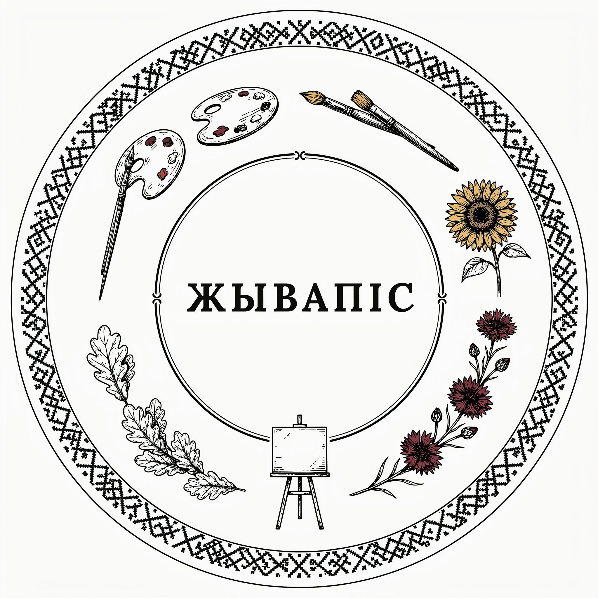
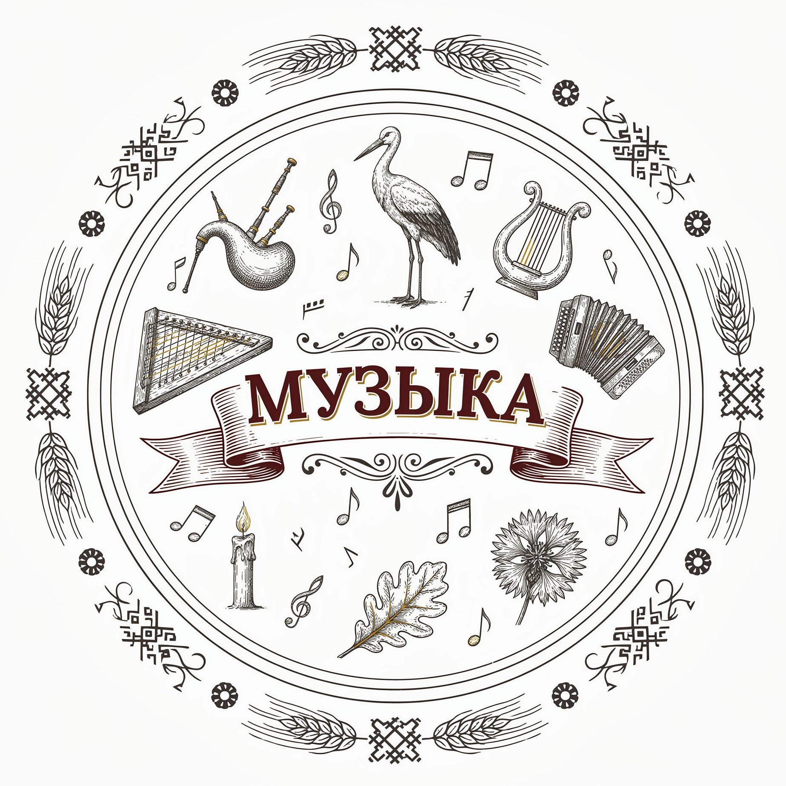
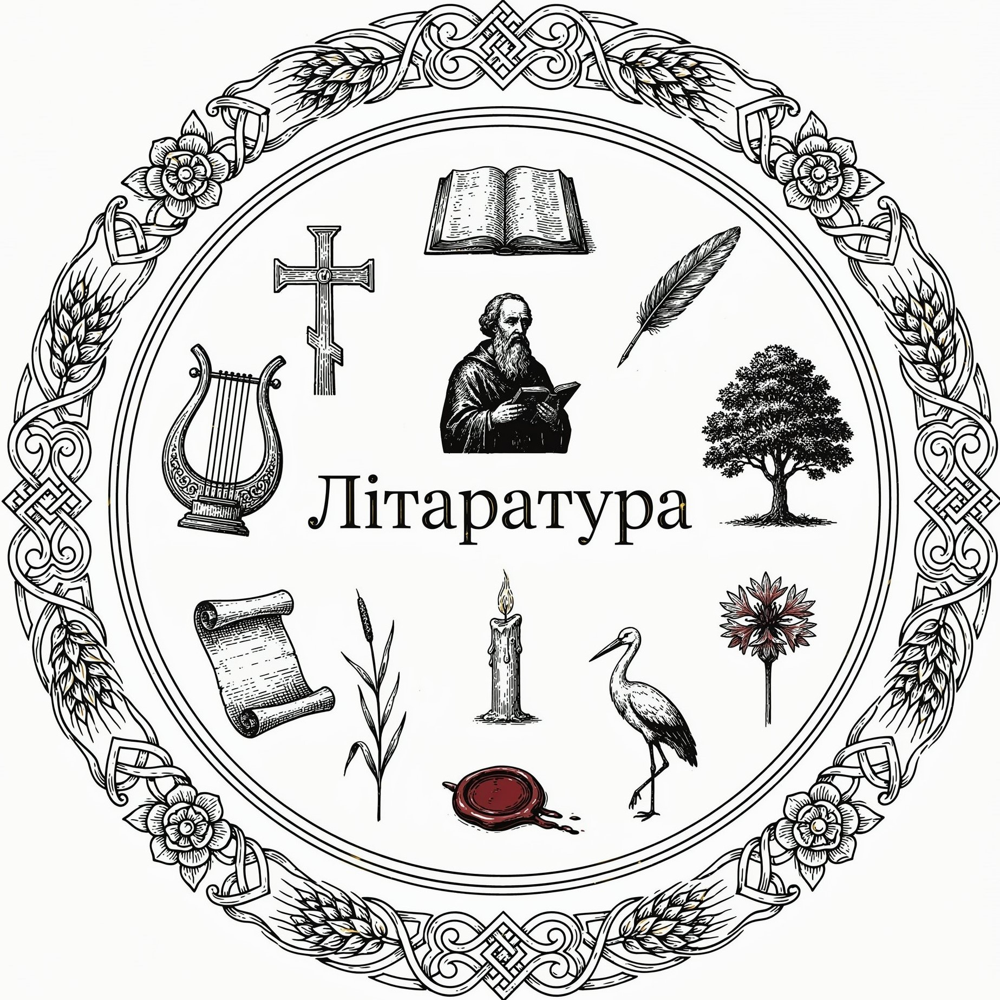
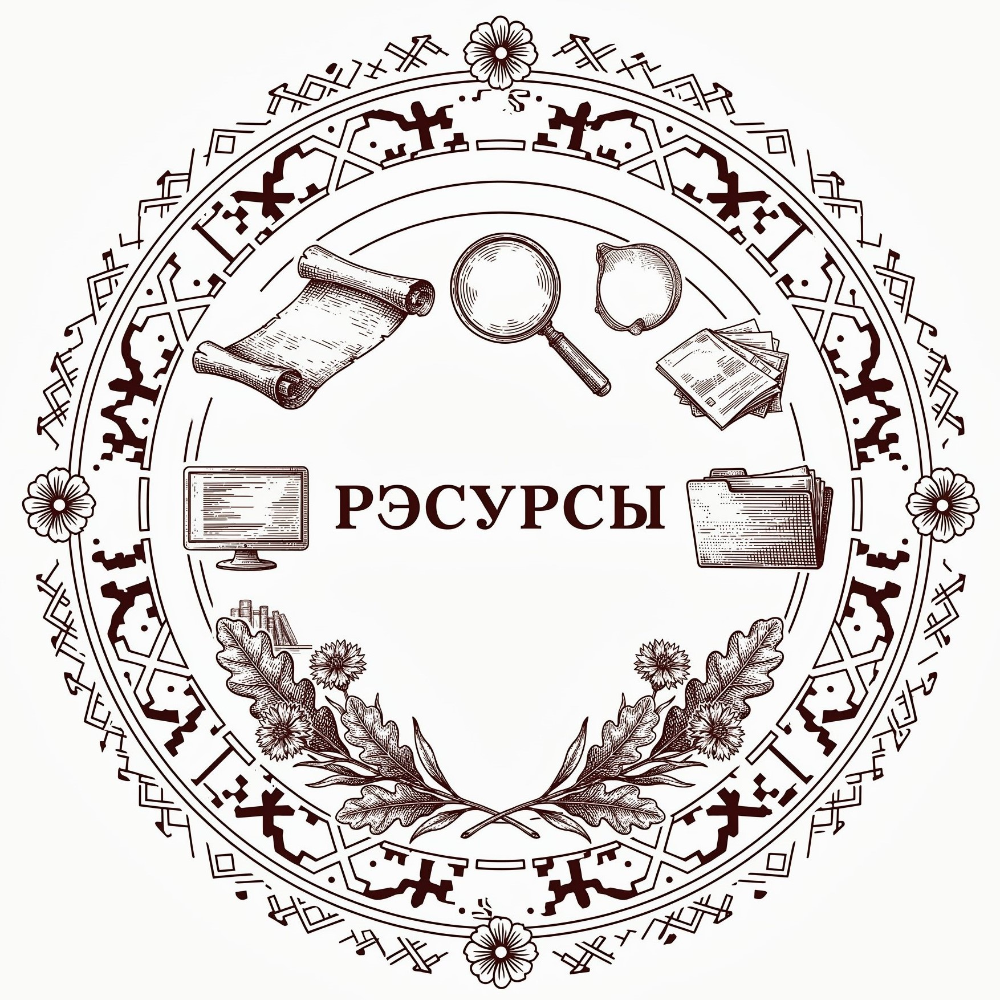

Источники
Список литературы и сайтов, использованных при создании данного информационного ресурса.

Живопись
- Гісторыя беларускага мастацтва : у 6 т. Т. 3 / рэдкал. С. В. Марцэлеў [і інш.] ; рэд. т. Л. М. Дробаў, П. А. Карнач. - Мінск, 1989.
- Гісторыя беларускага мастацтва : у 6 т. Т. 4 / рэдкал. С. В. Марцэлеў [і інш.] ; рэд. т. Л. М. Дробаў, В. Ф. Шматаў. - Мінск, 1990.
- Гісторыя беларускага мастацтва : у 6 т. Т. 5 / рэдкал. С. В. Марцэлеў [і інш.] ; рэд. т. П. А. Карнач. - Мінск, 1992.
- Гісторыя беларускага мастацтва : у 6 т. Т. 6 / рэдкал. С. В. Марцэлеў [і інш.] ; рэд. т. В. І. Жук. - Мінск, 1994.
- Дробаў Л. М. - Беларускія мастакі XIX стагоддзя. - Мінск, 1971.
Театр
- Аляхновіч Ф. - Беларускі тэатр. - Вільня, 1924.
- Літвіноўская Ю. І. - Тэатральнае жыццё Беларусі ў XIX ст. // Беларусь у эпоху геапалітычных і сацыяльных зрухаў Новага і Навейшага часу. - Мінск, 2019.
Кино
- Ремишевский К. И. - История, ожившая в кадре. Белорусская кинолетопись: испытание временем. Книга 1. - Минск, 2014.
- Малышев В. С. - Кинематограф Беларуси и ВГИК. - Москва: ВГИК, 2018.

Музыка
- Двужыльная І. Ф., Коўшык С. У. - Беларуская музычная літаратура ХХ стагоддзя (1900-1959). Ч. 1. - Мінск, 2012.
- Мацаберидзе Н. В. - Белорусская музыка (с IX до начала XX века): краткий курс лекций. - Витебск, 2009.
Литература
- Мельнікава, А. М. - Гісторыя беларускай літаратуры 20–30-х гадоў ХХ стагоддзя. - Гомель, 2024.
- Бурдзялёва, І. А. - Нарысы па гісторыі беларускай літаратуры ХІХ - пачатку ХХ стагоддзяў. - Мінск, 2009.
- Штэйнер, І. Ф., Брадзіхіна, А. В. - Гісторыя беларускай літаратуры ХІХ стагоддзя. - Гомель, 2021.
- Гісторыя Беларусі. Літаратура. Сусветнае мастацтва - Мінск, 2014.

Сайты и архивы

Как использовать этот раздел
- 📚 для углублённого изучения тем по истории и культуре Беларуси
- ✍️ для написания рефератов и презентаций
- 🔍 как отправную точку для собственного исследования